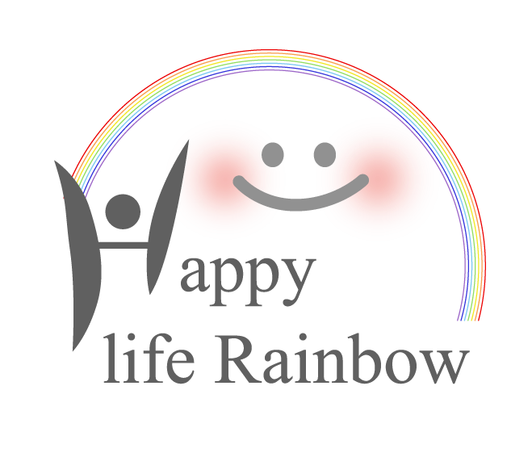

<!DOCTYPE html>
<html lang="ja">
<head>
  <meta charset="UTF-8" />
  <meta name="viewport" content="width=device-width, initial-scale=1.0" />
  <title>レインボーバランスファインド | Happy Life Rainbow™</title>

  <script src="https://unpkg.com/react@17/umd/react.development.js"></script>
  <script src="https://unpkg.com/react-dom@17/umd/react-dom.development.js"></script>
  <script src="https://unpkg.com/@babel/standalone/babel.min.js"></script>
  <script src="https://cdn.tailwindcss.com"></script>

  <style>
    @import url('https://fonts.googleapis.com/css2?family=Noto+Serif+JP:wght@400;500;600;700&family=Noto+Sans+JP:wght@300;400;500;700;900&display=swap');

    :root {
      --mental: #FF9AA2;
      --health: #FFB347;
      --work: #FFD93D;
      --money: #6BCB77;
      --learning: #4ECDC4;
      --hobby: #7ED6DF;
      --living: #5DADE2;
      --relation: #C8A2C8;
      --ink: #243042;
      --gold: #c5a059;
    }

    * { box-sizing: border-box; }

    body {
      margin: 0;
      font-family: 'Noto Sans JP', sans-serif;
      color: var(--ink);
      background: #ffffff;
      overflow-x: hidden;
    }

    .aurora-bg {
      position: fixed;
      inset: 0;
      z-index: -1;
      background:
        radial-gradient(circle at 15% 12%, rgba(255,154,162,.22), transparent 28%),
        radial-gradient(circle at 88% 16%, rgba(126,214,223,.23), transparent 30%),
        radial-gradient(circle at 50% 90%, rgba(107,203,119,.15), transparent 32%),
        linear-gradient(135deg, #ffffff 0%, #f8fbff 100%);
    }

    .glass-card {
      background: rgba(255,255,255,.78);
      backdrop-filter: blur(24px);
      -webkit-backdrop-filter: blur(24px);
      border: 1px solid rgba(255,255,255,.88);
      box-shadow: 0 34px 82px rgba(31,41,55,.075);
    }

    .soft-card {
      background: rgba(255,255,255,.82);
      border: 1px solid rgba(255,255,255,.92);
      box-shadow: 0 16px 36px rgba(31,41,55,.045);
    }

    .theme-card {
      background: linear-gradient(180deg, rgba(255,255,255,.92), rgba(255,255,255,.78));
      border: 1px solid rgba(255,255,255,.92);
      box-shadow: 0 16px 38px rgba(31,41,55,.05), inset 0 1px 0 rgba(255,255,255,.9);
    }

    .serif { font-family: 'Noto Serif JP', serif; font-weight: 600; }

    .brand-title {
      font-family: 'Noto Sans JP', sans-serif;
      font-weight: 400;
      font-size: clamp(1.32rem, 4.8vw, 2.1rem);
      letter-spacing: .06em;
      line-height: 1.22;
      white-space: normal;
      overflow-wrap: anywhere;
      word-break: keep-all;
      text-align: center;
      color: transparent;
      background: linear-gradient(90deg, rgba(255,154,162,.85), rgba(255,179,71,.85), rgba(255,217,61,.85), rgba(107,203,119,.85), rgba(78,205,196,.85), rgba(126,214,223,.85), rgba(93,173,226,.85), rgba(200,162,200,.85));
      -webkit-background-clip: text;
      background-clip: text;
    }

    .text-reveal { animation: textReveal .85s cubic-bezier(.16, 1, .3, 1) both; }
    @keyframes textReveal {
      from { opacity: 0; transform: translateY(14px); filter: blur(4px); }
      to { opacity: 1; transform: translateY(0); filter: blur(0); }
    }

    .btn-rainbow {
      background: linear-gradient(90deg, var(--mental), var(--health), var(--work), var(--money), var(--learning), var(--hobby), var(--living), var(--relation));
      transition: all .32s cubic-bezier(.16, 1, .3, 1);
      letter-spacing: .12em;
    }

    .btn-rainbow:hover {
      transform: translateY(-2px);
      box-shadow: 0 18px 36px rgba(236,64,122,.16);
      filter: saturate(1.04);
    }

    .rainbow-line {
      height: 4px;
      border-radius: 999px;
      background: linear-gradient(90deg, var(--mental), var(--health), var(--work), var(--money), var(--learning), var(--hobby), var(--living), var(--relation));
    }

    .hlr-icon svg {
      width: 44px;
      height: 44px;
      stroke-linecap: round;
      stroke-linejoin: round;
      transition: transform .35s cubic-bezier(.16,1,.3,1);
    }

    .hlr-icon:hover svg { transform: scale(1.06); }

    .cover-orbit {
      position: relative;
      width: min(78vw, 390px);
      height: min(78vw, 390px);
      margin: 0 auto;
    }

    .orbit-icon {
      position: absolute;
      left: 50%;
      top: 50%;
      transform: translate(-50%, -50%) rotate(var(--angle)) translateY(-145px) rotate(calc(-1 * var(--angle)));
      width: 68px;
      height: 68px;
      padding: 0;
      border: 0;
      background: transparent;
      cursor: pointer;
      perspective: 900px;
    }

    .orbit-card {
      display: block;
      position: relative;
      width: 100%;
      height: 100%;
      border-radius: 999px;
      transform-style: preserve-3d;
      transition: transform .72s cubic-bezier(.2,.8,.2,1), filter .32s cubic-bezier(.16,1,.3,1);
      will-change: transform;
    }

    .orbit-icon:hover .orbit-card,
    .orbit-icon:focus-visible .orbit-card,
    .orbit-icon.is-flipped .orbit-card { transform: rotateY(180deg); filter: saturate(1.04); }

    .orbit-face {
      position: absolute;
      inset: 0;
      display: flex;
      align-items: center;
      justify-content: center;
      border-radius: 999px;
      backface-visibility: hidden;
      -webkit-backface-visibility: hidden;
      border: 1px solid rgba(255,255,255,.72);
      backdrop-filter: blur(10px);
      -webkit-backdrop-filter: blur(10px);
      box-shadow: 0 12px 28px rgba(31,41,55,.045), inset 0 1px 0 rgba(255,255,255,.78), inset 0 -10px 18px rgba(36,48,66,.035);
      overflow: hidden;
    }

    .orbit-front { background: rgba(255,255,255,.38); }
    .orbit-back {
      transform: rotateY(180deg);
      background: #ffffff;
      color: var(--cat-color);
      font-size: 9px;
      font-weight: 900;
      letter-spacing: .08em;
      line-height: 1;
      text-align: center;
      padding: 0 6px;
      white-space: nowrap;
    }

    .custom-scrollbar::-webkit-scrollbar { width: 5px; }
    .custom-scrollbar::-webkit-scrollbar-track { background: transparent; }
    .custom-scrollbar::-webkit-scrollbar-thumb { background: #e5e7eb; border-radius: 999px; }

    #runtime-error {
      display: none;
      position: fixed;
      left: 12px;
      right: 12px;
      bottom: 12px;
      z-index: 50;
      padding: 14px 16px;
      border-radius: 16px;
      background: rgba(255,255,255,.96);
      border: 1px solid #fecdd3;
      color: #9f1239;
      font-size: 12px;
      box-shadow: 0 14px 36px rgba(31,41,55,.12);
      white-space: pre-wrap;
    }

    @media (max-width: 520px) {
      body { align-items: flex-start; padding: 12px !important; }
      .glass-card { border-radius: 2rem !important; }
      .brand-title { font-size: clamp(1.16rem, 5.2vw, 1.42rem); letter-spacing: .025em; line-height: 1.28; }
      .cover-orbit { width: min(82vw, 310px); height: min(82vw, 310px); margin-bottom: 2rem; }
      .orbit-icon { transform: translate(-50%, -50%) rotate(var(--angle)) translateY(-116px) rotate(calc(-1 * var(--angle))); width: 52px; height: 52px; }
      .orbit-icon .hlr-icon svg { width: 32px; height: 32px; }
      .orbit-back { font-size: 7px; letter-spacing: .035em; padding: 0 4px; }
    }
  </style>
</head>

<body class="min-h-screen flex items-center justify-center p-4 sm:p-10">
  <div class="aurora-bg"></div>
  <div id="root" class="w-full max-w-4xl"></div>
  <div id="runtime-error"></div>

  <script>
    window.onerror = function(message, source, lineno, colno) {
      var box = document.getElementById('runtime-error');
      if (box) {
        box.style.display = 'block';
        box.textContent = 'エラーが発生しました。
' + message + '
line: ' + lineno + ', column: ' + colno;
      }
      return false;
    };
  </script>

  <script type="text/babel" data-presets="env,react">
    const { useState } = React;
    const bookingUrl = 'https://example.com/free-session';

    const colors = {
      mental: '#FF9AA2', health: '#FFB347', work: '#FFD93D', money: '#6BCB77',
      learning: '#4ECDC4', hobby: '#7ED6DF', living: '#5DADE2', relation: '#C8A2C8'
    };

    function hexToRgba(hex, alpha) {
      const clean = hex.replace('#', '');
      const r = parseInt(clean.slice(0, 2), 16);
      const g = parseInt(clean.slice(2, 4), 16);
      const b = parseInt(clean.slice(4, 6), 16);
      return 'rgba(' + r + ',' + g + ',' + b + ',' + alpha + ')';
    }

    function IconGlyph({ id, color }) {
      const line = { fill: 'none', stroke: 'currentColor', strokeWidth: 8, strokeLinecap: 'round', strokeLinejoin: 'round' };
      const thin = { fill: 'none', stroke: 'currentColor', strokeWidth: 6, strokeLinecap: 'round', strokeLinejoin: 'round' };
      const glyphs = {
        mental: <g style={{ color }}><path {...line} d="M150 220 C105 184 70 154 78 114 C84 83 122 75 150 109 C178 75 216 83 222 114 C230 154 195 184 150 220Z" /><circle cx="150" cy="150" r="5" fill="currentColor" /><path {...thin} d="M95 78 L82 58 M125 62 L118 38 M150 55 L150 28 M175 62 L182 38 M205 78 L218 58" /></g>,
        health: <g style={{ color }}><path {...line} d="M55 178 C95 138 125 218 150 178 C175 138 205 218 245 178" /><path {...line} d="M55 216 C95 176 125 256 150 216 C175 176 205 256 245 216" /><circle {...line} cx="150" cy="122" r="22" /><circle cx="150" cy="72" r="7" fill="currentColor" /><circle cx="150" cy="42" r="5" fill="currentColor" /></g>,
        work: <g style={{ color }}><path {...line} d="M50 205 H250" /><path {...line} d="M105 205 A45 45 0 0 1 195 205" /><path {...thin} d="M150 42 V130 M150 42 L132 62 M150 42 L168 62" /><path {...thin} d="M82 150 L58 132 M105 128 L92 100 M128 115 L120 82 M172 115 L180 82 M195 128 L208 100 M218 150 L242 132" /></g>,
        money: <g style={{ color }}><path {...line} d="M72 176 C72 116 116 74 172 84 C225 94 246 150 221 195 C195 241 132 245 96 207" /><path {...thin} d="M205 84 C218 56 235 44 260 40 C264 68 252 88 225 100" /><path {...thin} d="M198 86 C183 64 161 58 140 62 C145 88 166 101 195 100" /><path {...thin} d="M92 156 C84 166 84 178 92 188" /><circle cx="94" cy="172" r="5" fill="currentColor" /></g>,
        learning: <g style={{ color }}><path {...line} d="M48 180 C92 162 128 177 150 236 C172 177 208 162 252 180" /><path {...line} d="M65 212 C104 194 131 205 150 236 C169 205 196 194 235 212" /><path {...line} d="M82 242 C115 224 138 229 150 236 C162 229 185 224 218 242" /><path {...thin} d="M150 68 C156 96 166 106 194 112 C166 118 156 128 150 156 C144 128 134 118 106 112 C134 106 144 96 150 68Z" /></g>,
        hobby: <g style={{ color }}><path {...line} d="M101 218 C57 181 69 91 135 76 C196 62 206 126 178 160 C150 194 93 177 122 130 C148 88 217 112 197 178 C184 220 121 235 103 184 C88 141 161 125 172 172 C182 215 222 225 247 193" /><path {...thin} d="M228 66 C234 91 243 100 268 106 C243 112 234 121 228 146 C222 121 213 112 188 106 C213 100 222 91 228 66Z" /><circle cx="236" cy="164" r="5" fill="currentColor" /></g>,
        living: <g style={{ color }}><path {...line} d="M55 130 L150 48 L245 130" /><path {...line} d="M75 135 V207 C75 238 100 248 128 248 H172 C200 248 225 238 225 207 V135" /><path {...line} d="M150 230 C117 202 104 181 111 158 C118 135 144 133 150 154 C156 133 182 135 189 158 C196 181 183 202 150 230Z" /><path {...thin} d="M132 88 H168 V124 H132 Z M150 88 V124 M132 106 H168" /></g>,
        relation: <g style={{ color }}><circle {...line} cx="117" cy="158" r="72" /><circle {...line} cx="183" cy="158" r="72" /><path {...thin} d="M150 187 C132 172 125 160 129 148 C133 136 146 135 150 146 C154 135 167 136 171 148 C175 160 168 172 150 187Z" /><path {...thin} d="M150 52 V34 M126 62 L112 48 M174 62 L188 48" /></g>
      };
      return glyphs[id];
    }

    function CategoryIcon({ id, color, size = 44 }) {
      return <span className="hlr-icon inline-flex items-center justify-center"><svg viewBox="0 0 300 300" width={size} height={size} role="img" aria-label={id + ' icon'}><IconGlyph id={id} color={color} /></svg></span>;
    }

    const categories = [
      {
        id: 'mental', name: 'MENTAL', jp: 'メンタル', color: colors.mental, layer: '価値観・内面',
        role: 'すべての土台。心のあり方、自己肯定感、マインドセットを整える領域です。',
        clearTitle: '自分の感覚を信じる力',
        disturbed: '自己否定や思考の固定が起きやすく、行動が止まりやすい状態。',
        balanced: '自分を信じる力が戻り、自然と選択と行動が軽くなる状態。',
        questions: ['本当は変わりたいのに、「自分には無理かもしれない」と感じることがある。','うまくいかない理由を、自分の性格や過去のせいにしてしまうことがある。','人と比べて、自分には足りないものばかり見えてしまうことがある。','褒められても素直に受け取れず、「まだまだ」と思ってしまう。','本音よりも、周りからどう見られるかを優先してしまうことがある。'],
        action: '自分を責める言葉をひとつ手放し、本当はどう感じているのかをやさしく聞いてみましょう。'
      },
      {
        id: 'health', name: 'HEALTH', jp: '健康', color: colors.health, layer: '身体・行動力',
        role: '行動力の源泉。体力、回復力、睡眠、生活リズムを支える領域です。',
        clearTitle: '心地よく動き続ける力',
        disturbed: '疲れやストレスが溜まり、集中力や前向きさが下がりやすい状態。',
        balanced: '心身の土台が安定し、自然に動き続けられる状態。',
        questions: ['自分の体調や疲れを後回しにして、無理を続けてしまうことがある。','健康を整えたいと思っても、「忙しいから仕方ない」と諦めてしまう。','休むことに罪悪感があり、つい予定を詰め込んでしまう。','睡眠・食事・運動を整えたいと思いながら、後回しになりやすい。','体からの小さなサインに気づいても、まだ大丈夫だと思ってしまう。'],
        action: '体の声を「わがまま」ではなく、未来の自分からのメッセージとして受け取ってみましょう。'
      },
      {
        id: 'work', name: 'WORK', jp: '仕事', color: colors.work, layer: '社会・価値発揮',
        role: '価値発揮の場。役割、キャリア、貢献、社会との接点を表します。',
        clearTitle: '自分らしい価値を届ける力',
        disturbed: 'やりがいや自己表現が弱まり、働き方への違和感が強まりやすい状態。',
        balanced: '自分の役割と価値がつながり、自然に貢献できる状態。',
        questions: ['今の仕事や役割に、どこか違和感や窮屈さを感じることがある。','本当はもっと自分らしく働きたいのに、現実的に無理だと思ってしまう。','頑張っているのに、自分の価値が十分に伝わっていないと感じる。','仕事で評価されても、心から満たされないことがある。','将来の働き方を考えると、期待よりも不安が先に出てくる。'],
        action: '評価されることだけでなく、心が少し明るくなる役割や貢献の形を探してみましょう。'
      },
      {
        id: 'money', name: 'MONEY', jp: 'お金', color: colors.money, layer: '安心・循環',
        role: '安心と豊かさの循環。受け取り方、使い方、未来への信頼を表します。',
        clearTitle: '豊かさを安心して巡らせる力',
        disturbed: '不足感や不安から、選択の自由が狭く感じられやすい状態。',
        balanced: 'お金を人生の味方として扱い、安心して選択できる状態。',
        questions: ['お金のことを考えると、不安や焦りが強くなることがある。','本当は使いたいことがあっても、罪悪感や怖さで我慢してしまう。','自分には十分な豊かさを受け取る価値があると思いきれない。','将来のお金のことを考えると、楽しみより心配が大きくなる。','お金を増やす・整える行動をしたいのに、何から始めたらいいかわからない。'],
        action: '不安だけを見るのではなく、お金があなたに届けてくれている安心や経験にも目を向けてみましょう。'
      },
      {
        id: 'learning', name: 'LEARNING', jp: '学び', color: colors.learning, layer: '成長・可能性',
        role: '可能性をひらく領域。学び、挑戦、知恵、未来への拡張を表します。',
        clearTitle: '未来の可能性を開く力',
        disturbed: '学びたい気持ちがあっても、自信不足や後回しで止まりやすい状態。',
        balanced: '好奇心が戻り、小さな学びから未来が広がる状態。',
        questions: ['学びたいことはあるのに、今さら遅いかもしれないと思うことがある。','新しいことを始める前に、失敗や続かない不安が浮かぶ。','自分の可能性を広げたいのに、日々の忙しさで後回しになりやすい。','周りと比べて、自分の知識やスキルが足りないと感じる。','本当は挑戦したい分野があるのに、現実的ではないと抑えている。'],
        action: '完璧に始めるより、5分だけ触れてみるような小さな学びを選んでみましょう。'
      },
      {
        id: 'hobby', name: 'HOBBY', jp: '趣味', color: colors.hobby, layer: '喜び・余白',
        role: '心の余白と喜び。好き、遊び、創造性、自分に戻る時間を表します。',
        clearTitle: '喜びで自分に戻る力',
        disturbed: '楽しむことへの罪悪感や後回しが起き、心の余白が狭くなりやすい状態。',
        balanced: '好きな時間が心を満たし、自然な創造性が戻る状態。',
        questions: ['好きなことをする時間を、つい後回しにしてしまう。','楽しむことに、どこか罪悪感や無駄だという感覚がある。','最近、心から楽しいと感じる時間が減っている。','昔好きだったことに、今は触れられていない。','何が好きなのか、何をすると心が満たされるのか分からなくなることがある。'],
        action: '役に立つかどうかではなく、心がふっとゆるむものをひとつ思い出してみましょう。'
      },
      {
        id: 'living', name: 'LIVING', jp: '暮らし', color: colors.living, layer: '環境・土台',
        role: '日常の器。住まい、時間、生活導線、安心できる居場所を表します。',
        clearTitle: '安心できる日常を整える力',
        disturbed: '暮らしの乱れや環境ストレスが、心の落ち着きを奪いやすい状態。',
        balanced: '日常の器が整い、自分のペースを取り戻せる状態。',
        questions: ['部屋や身の回りの状態が、心の落ち着きに影響していると感じる。','暮らしを整えたいのに、忙しさで後回しになっている。','家にいても、心から休まらないことがある。','時間の使い方や生活リズムが、自分に合っていないと感じる。','もっと心地よい日常にしたいのに、何から変えたらいいかわからない。'],
        action: '暮らし全体を変えようとせず、一か所だけ空気が通る場所をつくってみましょう。'
      },
      {
        id: 'relation', name: 'RELATION', jp: '人間関係', color: colors.relation, layer: 'つながり・境界線',
        role: '人とのつながり。愛情、信頼、距離感、境界線を表します。',
        clearTitle: '自然体でつながる力',
        disturbed: '合わせすぎや遠慮により、本音や境界線が見えにくくなりやすい状態。',
        balanced: '自分らしさを保ちながら、安心してつながれる状態。',
        questions: ['人に合わせすぎて、自分の本音が分からなくなることがある。','嫌われたくなくて、言いたいことを飲み込んでしまう。','人間関係で疲れても、自分が我慢すればいいと思ってしまう。','本当はもっと自然体で関わりたいのに、気を使いすぎてしまう。','安心できる関係と、距離を置きたい関係の区別が曖昧になることがある。'],
        action: 'すべての人に合わせるのではなく、安心して呼吸できる距離感を大切にしてみましょう。'
      }
    ];

    const answerChoices = categories.reduce(function(acc, cat) {
      acc[cat.id] = [
        ['ほとんどない', '少しある'],
        ['今は大丈夫', 'たしかにある'],
        ['あまりない', 'よくある'],
        ['気にならない', '気になる'],
        ['手放せている', 'まだ残っている']
      ];
      return acc;
    }, {});

    const oppositePairs = { mental: 'money', money: 'mental', health: 'learning', learning: 'health', work: 'hobby', hobby: 'work', living: 'relation', relation: 'living' };
    const adjacentNext = { mental: 'health', health: 'work', work: 'money', money: 'learning', learning: 'hobby', hobby: 'living', living: 'relation', relation: 'mental' };

    const pairThemes = {
      'mental-money': '自分の価値と、豊かさの受け取り方',
      'health-learning': '体のリズムと、未来へ伸びる力',
      'hobby-work': '役割としての自分と、喜びとしての自分',
      'living-relation': '安心できる居場所と、安心できるつながり'
    };

    function getCategory(id) { return categories.find(function(c) { return c.id === id; }); }
    function scoreToPercent(score) { return Math.round((score / 5) * 100); }
    function scoreToClarityPercent(score) { return Math.round(((5 - score) / 5) * 100); }
    function scoreToWobblePercent(score) { return scoreToPercent(score); }

    function getClarityLevel(score) {
      const clarityScore = 5 - score;
      const clarityPercent = scoreToClarityPercent(score);
      const wobblePercent = scoreToWobblePercent(score);
      if (score >= 5) return { label: '深いゆらぎ', clarityLabel: '光を探している状態', tone: 'いまは、この領域に言葉になる前の想いや疲れが集まっています。無理に答えを出すより、まず「何が苦しいのか」「本当はどうしたいのか」を分けて見ることが大切です。', badge: 'bg-rose-50 text-rose-500 border-rose-100', clarityScore, clarityPercent, wobblePercent };
      if (score >= 4) return { label: 'やや濃いゆらぎ', clarityLabel: '整える余白がある状態', tone: 'この領域では、気づかないうちに力が入りすぎている可能性があります。頑張りが足りないのではなく、心の使い方や優先順位を少し見直すサインです。', badge: 'bg-pink-50 text-pink-500 border-pink-100', clarityScore, clarityPercent, wobblePercent };
      if (score >= 3) return { label: '小さなゆらぎ', clarityLabel: '気づきが生まれ始めた状態', tone: '小さな違和感が、そろそろ言葉にしてほしいサインとして現れています。今のうちに整えることで、未来の選択が軽くなりやすい領域です。', badge: 'bg-amber-50 text-amber-600 border-amber-100', clarityScore, clarityPercent, wobblePercent };
      if (score >= 1) return { label: 'ほぼクリア', clarityLabel: '軽やかに使えている状態', tone: '大きな詰まりは少なく、この領域は日常の中で比較的自然に使えています。さらに整えるなら、今すでにできていることを意識的に育てるのがおすすめです。', badge: 'bg-sky-50 text-sky-500 border-sky-100', clarityScore, clarityPercent, wobblePercent };
      return { label: 'とてもクリア', clarityLabel: '安定した光として働いている状態', tone: 'この領域は、今のあなたを支える安定した光として働いています。ここにある安心感や強みは、他の領域を整える土台にもなります。', badge: 'bg-emerald-50 text-emerald-500 border-emerald-100', clarityScore, clarityPercent, wobblePercent };
    }
    const getMoyamoyaLevel = getClarityLevel;

    function getDeepCategoryInsight(cat) {
      const insights = {
        mental: { now: '心の中で「こうあるべき」と「本当はこうしたい」が静かに重なっているかもしれません。', wish: 'もっと自分を責めずに、自分の感覚を信じて選びたいという願いがあります。', step: '今日ひとつだけ、「本当はどう感じている？」と自分に聞く時間をつくってみましょう。' },
        health: { now: '体の声よりも、予定や責任を優先しやすくなっている可能性があります。', wish: '無理を続けるのではなく、心地よく動けるリズムを取り戻したい願いがあります。', step: '睡眠・食事・休息のどれか一つを、いつもより少しだけ丁寧に扱ってみましょう。' },
        work: { now: '役割や期待に応えようとする一方で、自分らしい価値発揮を探している状態です。', wish: 'ただ頑張るだけでなく、自分の強みや想いが自然に活きる働き方を求めています。', step: '最近「これは少し楽しかった」と感じた仕事を一つ書き出してみましょう。' },
        money: { now: '安心したい気持ちと、自由に使いたい気持ちの間で揺れがあるかもしれません。', wish: 'お金を不安の象徴ではなく、自分らしい選択を支える味方にしたい願いがあります。', step: '今週、自分にとって本当に価値があった支出を一つ振り返ってみましょう。' },
        learning: { now: '学びたい気持ちはあるのに、時間や自信の不足で後回しになっている可能性があります。', wish: '新しい知識や経験を通じて、未来の可能性をもう一度広げたい願いがあります。', step: '興味のあるテーマを一つだけ選び、5分だけ調べるところから始めてみましょう。' },
        hobby: { now: '楽しむことを後回しにして、心の余白が少し狭くなっているかもしれません。', wish: '役に立つかどうかではなく、ただ好きだから選ぶ時間を取り戻したい願いがあります。', step: '昔好きだったこと、最近少し気になることを一つだけメモしてみましょう。' },
        living: { now: '暮らしの中に小さな乱れや落ち着かなさが出ている可能性があります。', wish: '帰ってくる場所、過ごす空間、自分のペースを安心できるものに整えたい願いがあります。', step: '机の上、バッグの中、玄関など一か所だけ整えて、空気を入れ替えてみましょう。' },
        relation: { now: '人との距離感の中で、合わせすぎたり、言えない気持ちが残っているかもしれません。', wish: '無理に好かれるよりも、自然体でつながれる関係を大切にしたい願いがあります。', step: '安心できる人を一人思い浮かべ、その人の前で出せている自分を書き出してみましょう。' }
      };
      return insights[cat.id];
    }

    function getPersonalCategoryReport(cat) {
      const level = getClarityLevel(cat.score);
      if (cat.score >= 4) {
        return cat.jp + 'の領域には、いま濃いサインが出ています。これは弱さではなく、あなたが本当は大切にしたいものが見え始めている合図です。' + level.tone;
      }
      if (cat.score >= 2) {
        return cat.jp + 'の領域には、小さなゆらぎと同時に、整え直せる余白があります。今すぐ大きく変える必要はありません。気づいた違和感を一つずつ言葉にすることで、次の選択が軽くなります。';
      }
      return cat.jp + 'の領域は、今のあなたを支える比較的クリアな光として働いています。この安定感は、他の揺らぎを整えるときの安心できる土台になります。';
    }

    function normalizePair(a, b) {
      const order = categories.map(function(c) { return c.id; });
      return order.indexOf(a) < order.indexOf(b) ? a + '-' + b : b + '-' + a;
    }

    function getSkyState(total) {
      if (total >= 26) return { title: '虹の前の、やさしい通り雨。', message: 'いくつかの領域に濃いゆらぎが出ているときは、人生が止まっているのではなく、これまでの価値観が新しい形へほどけ始めている時期です。今は急いで晴れにしようとせず、雨音の中にある本音を聞くことが大切です。' };
      if (total >= 16) return { title: '雲のすき間から、光の方向が見え始めています。', message: '小さな違和感は、あなたを責めるものではなく、未来の選び方を教えてくれるサインです。ひとつ整えると、隣のカテゴリーにもやさしい光が広がっていきます。' };
      return { title: '穏やかな空に、次の虹をかける準備ができています。', message: '全体は比較的安定しています。ここからは守るだけでなく、好きなこと・挑戦したいこと・大切な人とのつながりへ、光を少しずつ広げていくタイミングです。' };
    }

    function analyze(answers) {
      const scores = {};
      categories.forEach(function(c) { scores[c.id] = 0; });
      categories.forEach(function(cat, ci) {
        cat.questions.forEach(function(q, qi) {
          const idx = ci * 5 + qi;
          if (answers[idx] === 1) scores[cat.id] += 1;
        });
      });

      const scored = categories.map(function(c) {
        const score = scores[c.id] || 0;
        return Object.assign({}, c, {
          score: score,
          percent: scoreToWobblePercent(score),
          clarityPercent: scoreToClarityPercent(score),
          reportTitle: score >= 4 ? c.jp + 'に、深く見つめたいサインがあります' : score >= 2 ? c.jp + 'に、整える余白が見えています' : c.jp + 'は、今のあなたを支える光です'
        });
      }).sort(function(a, b) { return b.score - a.score; });

      const top = scored[0];
      const second = scored[1];
      const third = scored[2];
      const total = scored.reduce(function(sum, c) { return sum + c.score; }, 0);
      const opposite = getCategory(oppositePairs[top.id]);
      const next = getCategory(adjacentNext[top.id]);
      const pairKey = normalizePair(top.id, opposite.id);
      const pairTheme = pairThemes[pairKey] || '人生の本質テーマ';
      const skyState = getSkyState(total);

      let totalLabel = '小さな違和感を、やさしく言葉にすること';
      let totalMessage = '全体として大きく崩れているというより、いくつかの領域に小さなゆらぎが出始めている状態です。今のうちに丁寧に言語化すると、未来の選択が軽くなります。詩的に言えば、虹の色が一度に混ざって見えている状態。解説すると、本当は大切にしたい価値観が、日常の中で少しだけ見えにくくなっているということです。';

      if (total >= 26) {
        totalLabel = '心の奥にある願いを、もう一度組み直すこと';
        totalMessage = '複数のカテゴリーに、今のあなたからの大切なサインが出ています。これは悪い結果ではなく、これまで頑張ってきた自分を一度ゆっくり見つめ直すタイミングです。詩的に言えば、雨上がりの前に空が深く色づいている状態。解説すると、今までの頑張り方・守り方・選び方を、これからの自分に合う形へ更新する必要があるということです。';
      } else if (total >= 16) {
        totalLabel = '小さな違和感を言葉にして、流れを整えること';
        totalMessage = 'いくつかの領域で、エネルギーのゆらぎが見えています。大きく変えようとしなくても大丈夫です。まずは小さな違和感を言葉にすることから始めると、隣り合うカテゴリーにもやさしい連鎖が広がっていきます。詩的に言えば、雲の切れ間から光の筋が差し込む状態。解説すると、すでに気づきは始まっていて、あとは具体的な一歩へ変える段階です。';
      } else if (total <= 7) {
        totalLabel = '安定した虹を、未来へ軽やかに広げること';
        totalMessage = '全体のバランスは比較的クリアで、今のあなたを支える土台が整っています。ここからは整えるだけでなく、理想のビジョンに向けて、好き・挑戦・つながりを少しずつ広げていくフェーズです。詩的に言えば、澄んだ空に次の虹を描ける状態。解説すると、現状維持よりも「どんな未来へ広げたいか」を考えると可能性が開きやすい時期です。';
      }

      return { scored, top, second, third, total, opposite, next, pairTheme, totalLabel, totalMessage, skyState };
    }

    function runSelfTests() {
      console.assert(categories.length === 8, 'categories should have 8 items');
      console.assert(categories.every(function(c) { return c.questions.length === 5; }), 'each category should have 5 questions');
      console.assert(analyze(new Array(40).fill(0)).total === 0, 'allNo total should be 0');
      console.assert(analyze(new Array(40).fill(1)).total === 40, 'allYes total should be 40');
      console.assert(scoreToPercent(5) === 100, 'score 5 should be 100% wobble');
      console.assert(scoreToClarityPercent(0) === 100, 'score 0 should be 100% clarity');
      console.assert(scoreToClarityPercent(5) === 0, 'score 5 should be 0% clarity');
    }
    runSelfTests();

    function LogoMark() {
      const sources = ['./logo.png', 'logo.png', '/logo.png', '/mnt/data/logo.png'];
      const [sourceIndex, setSourceIndex] = useState(0);
      const src = sources[sourceIndex];
      function handleLogoError() { if (sourceIndex < sources.length - 1) setSourceIndex(sourceIndex + 1); }
      return ;
    }

    function SubLogoMark() {
      const sources = ['./sublogo.png', 'sublogo.png', '/sublogo.png', '/mnt/data/sublogo.png'];
      const [sourceIndex, setSourceIndex] = useState(0);
      const src = sources[sourceIndex];
      function handleLogoError() { if (sourceIndex < sources.length - 1) setSourceIndex(sourceIndex + 1); }
      return ;
    }

    function CategoryCircleChart({ scored }) {
      const ordered = categories.map(function(c) {
        const found = scored.find(function(s) { return s.id === c.id; });
        const rawScore = found ? found.score : 0;
        return Object.assign({}, c, { score: rawScore, percent: scoreToWobblePercent(rawScore), clarityPercent: scoreToClarityPercent(rawScore) });
      });
      const center = 190;
      const chartR = 92;
      const iconR = 148;
      const radarMaxR = 62;
      const angleOffset = -90;
      const oppositeLines = [[0,4],[1,5],[2,6],[3,7]];
      function point(index, radius) {
        const angle = (angleOffset + index * 45) * Math.PI / 180;
        return { x: center + Math.cos(angle) * radius, y: center + Math.sin(angle) * radius };
      }
      const radarPoints = ordered.map(function(cat, i) {
        const clarityRatio = (5 - cat.score) / 5;
        const p = point(i, 20 + clarityRatio * radarMaxR);
        return p.x + ',' + p.y;
      }).join(' ');

      return (
        <div className="mb-10">
          <div className="text-center mb-6">
            <p className="text-xs font-bold text-slate-400 tracking-[0.25em] mb-3">INNER RAINBOW MAP</p>
            <p className="text-sm text-slate-500 leading-relaxed">外側へ広がるほど、いまクリアに使えている力。内側に寄るほど、やさしく整えたい“ゆらぎ”のサインです。</p>
          </div>
          <div className="relative w-full max-w-[430px] mx-auto">
            <svg viewBox="0 0 380 380" className="w-full h-auto overflow-visible" aria-label="Inner Rainbow Map">
              <defs>
                <linearGradient id="innerRainbowFill" x1="0" y1="0" x2="1" y2="1">
                  <stop offset="0%" stopColor="#a5f3fc" stopOpacity="0.6" />
                  <stop offset="50%" stopColor="#bae6fd" stopOpacity="0.5" />
                  <stop offset="100%" stopColor="#e0f2fe" stopOpacity="0.4" />
                </linearGradient>
                <linearGradient id="rainbowStroke" x1="70" y1="70" x2="310" y2="310" gradientUnits="userSpaceOnUse">
                  <stop offset="0%" stopColor="#FF9AA2" /><stop offset="14%" stopColor="#FFB347" /><stop offset="28%" stopColor="#FFD93D" /><stop offset="42%" stopColor="#6BCB77" /><stop offset="56%" stopColor="#4ECDC4" /><stop offset="70%" stopColor="#7ED6DF" /><stop offset="84%" stopColor="#5DADE2" /><stop offset="100%" stopColor="#C8A2C8" />
                </linearGradient>
                <radialGradient id="softCenter" cx="50%" cy="50%" r="50%">
                  <stop offset="0%" stopColor="#ffffff" stopOpacity=".95" /><stop offset="72%" stopColor="#ffffff" stopOpacity=".72" /><stop offset="100%" stopColor="#fdf2f8" stopOpacity=".28" />
                </radialGradient>
              </defs>
              {[1,2,3,4,5].map(function(n) { return <circle key={n} cx={center} cy={center} r={20 + n * 13} fill="none" stroke="#e8edf3" strokeWidth="1" strokeDasharray="3 5" />; })}
              {ordered.map(function(cat, i) { const p1 = point(i, 24); const p2 = point(i, chartR); return <line key={cat.id} x1={p1.x} y1={p1.y} x2={p2.x} y2={p2.y} stroke="#d7dde7" strokeWidth="1" strokeDasharray="4 5" />; })}
              {oppositeLines.map(function(pair, idx) { const a = point(pair[0], chartR); const b = point(pair[1], chartR); return <line key={idx} x1={a.x} y1={a.y} x2={b.x} y2={b.y} stroke="#cbd5e1" strokeWidth="1" strokeDasharray="5 6" opacity=".7" />; })}
              <polygon points={radarPoints} fill="url(#innerRainbowFill)" stroke="url(#rainbowStroke)" strokeWidth="2.4" opacity=".96" />
              {ordered.map(function(cat, i) { const clarityRatio = (5 - cat.score) / 5; const p = point(i, 20 + clarityRatio * radarMaxR); return <circle key={cat.id + '-dot'} cx={p.x} cy={p.y} r="4.5" fill={cat.color} stroke="white" strokeWidth="2" />; })}
              <circle cx={center} cy={center} r={chartR} fill="none" stroke="#cbd5e1" strokeWidth="3" opacity=".9" />
              <circle cx={center} cy={center} r="48" fill="url(#softCenter)" stroke="rgba(255,255,255,.9)" strokeWidth="1" />
              <foreignObject x={center-40} y={center-30} width="80" height="60">
                <div style={{display:'flex',justifyContent:'center',alignItems:'center',width:'100%',height:'100%'}}>
                  
                </div>
              </foreignObject>
              {ordered.map(function(cat, i) { const p = point(i, iconR); return <g key={cat.id + '-label'} transform={'translate(' + p.x + ' ' + p.y + ')'}><circle r="27" fill="rgba(255,255,255,.82)" stroke="rgba(255,255,255,.96)" strokeWidth="1.2" /><g transform="translate(-18 -18) scale(.12)"><IconGlyph id={cat.id} color={cat.color} /></g><text y="42" textAnchor="middle" fill={cat.color} fontSize="10" fontWeight="900" letterSpacing="1.2">{cat.name}</text><text y="56" textAnchor="middle" fill="#94a3b8" fontSize="9" fontWeight="800">{cat.clarityPercent}%</text></g>; })}
            </svg>
          </div>
          <div className="mt-8 bg-white/60 border border-white rounded-2xl p-4 text-center">
            <p className="text-xs text-slate-500 leading-relaxed">このマップでは、外側に広がるほど「クリアに使えている力」が大きく表示されます。ゆらぎが強い領域は内側に現れ、深掘りレポートで優先的に整えるテーマとして表示されます。</p>
          </div>
        </div>
      );
    }

    function TopCircle() {
      const center = 190;
      const iconR = 145;
      function point(index, radius) {
        const angle = (-90 + index * 45) * Math.PI / 180;
        return { x: center + Math.cos(angle) * radius, y: center + Math.sin(angle) * radius };
      }
      return (
        <div className="cover-orbit mb-8">
          <div className="absolute inset-0 flex items-center justify-center">
            <div className="w-36 h-36 rounded-full bg-white/62 border border-white/90 shadow-sm flex items-center justify-center p-5"><LogoMark /></div>
          </div>
          {categories.map(function(cat, i) {
            return <button key={cat.id} type="button" className="orbit-icon" style={{ '--angle': (i * 45) + 'deg', '--cat-color': cat.color }} aria-label={cat.jp}><span className="orbit-card"><span className="orbit-face orbit-front"><CategoryIcon id={cat.id} color={cat.color} /></span><span className="orbit-face orbit-back">{cat.name}</span></span></button>;
          })}
        </div>
      );
    }

    function CategoryReportBody({ cat }) {
      const level = getClarityLevel(cat.score);
      const deep = getDeepCategoryInsight(cat);
      return (
        <>
          <div className="flex flex-wrap gap-2 mb-5">
            <span className={'inline-block text-[11px] font-bold border rounded-full px-3 py-1 ' + level.badge}>クリア度 {level.clarityPercent}% / {level.clarityLabel}</span>
            <span className="inline-block text-[11px] font-bold border rounded-full px-3 py-1 bg-white/70 text-slate-400 border-white">ゆらぎ {level.wobblePercent}% / {level.label}</span>
          </div>
          <h5 className="serif text-lg sm:text-xl text-slate-800 mb-3">{cat.reportTitle}</h5>
          <p className="text-sm sm:text-base text-slate-600 leading-loose mb-4">{getPersonalCategoryReport(cat)}</p>
          <div className="grid grid-cols-1 sm:grid-cols-3 gap-3 mt-5">
            <div className="rounded-2xl bg-white/58 border border-white/80 p-4"><p className="text-[10px] font-black tracking-[0.22em] text-slate-400 mb-2">いま見えていること</p><p className="text-xs sm:text-sm text-slate-600 leading-relaxed">{deep.now}</p></div>
            <div className="rounded-2xl bg-white/58 border border-white/80 p-4"><p className="text-[10px] font-black tracking-[0.22em] text-slate-400 mb-2">奥にある願い</p><p className="text-xs sm:text-sm text-slate-600 leading-relaxed">{deep.wish}</p></div>
            <div className="rounded-2xl bg-white/58 border border-white/80 p-4"><p className="text-[10px] font-black tracking-[0.22em] text-slate-400 mb-2">小さな一歩</p><p className="text-xs sm:text-sm text-slate-600 leading-relaxed">{deep.step}</p></div>
          </div>
          <p className="text-sm sm:text-base text-slate-600 leading-loose mt-5">ここから少しずつ、{cat.action}</p>
        </>
      );
    }

    function QuestionStep({ index, answers, setAnswers, onAutoNext }) {
      const catIndex = Math.floor(index / 5);
      const questionIndex = index % 5;
      const cat = categories[catIndex];
      const question = cat.questions[questionIndex];
      const choices = answerChoices[cat.id][questionIndex];
      const progress = Math.round(((index + 1) / 40) * 100);
      function choose(value) {
        const next = answers.slice();
        next[index] = value;
        setAnswers(next);
        window.setTimeout(function() {
          if (typeof onAutoNext === 'function') onAutoNext();
        }, 260);
      }
      return (
        <div className="text-reveal">
          <div className="mb-8">
            <div className="flex items-center justify-between mb-3"><p className="text-xs font-black tracking-[0.22em] text-slate-400">QUESTION {index + 1} / 40</p><p className="text-xs font-black text-slate-400">{progress}%</p></div>
            <div className="h-2 bg-slate-100 rounded-full overflow-hidden"><div className="h-full btn-rainbow rounded-full" style={{ width: progress + '%' }}></div></div>
          </div>
          <div className="text-center mb-8">
            <div className="inline-flex items-center justify-center w-20 h-20 rounded-full bg-white/68 border border-white/90 shadow-sm mb-5"><CategoryIcon id={cat.id} color={cat.color} size={52} /></div>
            <p className="text-xs font-black tracking-[0.25em] mb-2" style={{ color: cat.color }}>{cat.name} / {cat.jp}</p>
            <h2 className="serif text-xl sm:text-3xl text-slate-800 leading-relaxed">{question}</h2>
          </div>
          <div className="grid grid-cols-1 sm:grid-cols-2 gap-4">
            {[0,1].map(function(value) {
              const selected = answers[index] === value;
              return <button key={value} type="button" onClick={function() { choose(value); }} className={'rounded-[1.6rem] p-5 sm:p-6 text-left border transition-all ' + (selected ? 'bg-white shadow-lg border-white scale-[1.01]' : 'bg-white/55 border-white/80 hover:bg-white/82')}><span className="block text-xs font-black tracking-[0.22em] text-slate-400 mb-2">{value === 0 ? 'A' : 'B'}</span><span className="block text-base sm:text-lg font-bold text-slate-700">{choices[value]}</span></button>;
            })}
          </div>
        </div>
      );
    }

    function ResultScreen({ insight, onRestart }) {
      return (
        <div className="text-reveal">
          <header className="text-center mb-8 sm:mb-10">
            <div className="mx-auto w-24 h-24 mb-5"><LogoMark /></div>
            <p className="text-xs font-bold text-slate-400 tracking-[0.30em] mb-3">レインボーバランスファインド</p>
            <h2 className="text-3xl sm:text-6xl font-light tracking-[0.12em] sm:tracking-[0.16em] text-transparent bg-clip-text bg-gradient-to-r from-pink-300 via-yellow-300 to-sky-300 uppercase">Insight Report</h2>
            <p className="serif mt-5 text-sm tracking-[0.16em] sm:tracking-[0.22em] text-slate-400 italic">ゆらぎの奥に、いま見えてきた虹。</p>
          </header>

          <section className="soft-card rounded-[2rem] sm:rounded-[2.5rem] p-5 sm:p-10 mb-8 sm:mb-10 text-center">
            <p className="text-sm sm:text-base text-slate-600 leading-loose">あなたが選んだ感覚から、いまの内側にある虹のかけらが少しずつ見えてきました。<br />このレポートでは、<strong className="font-black text-slate-700">外側に広がるほどクリアに使えている力</strong>、内側に寄るほど整えたいゆらぎとして表示しています。<br className="hidden sm:block" />良い・悪いを判断するものではなく、すでにある答えに気づいていくためのものです。</p>
          </section>

          <CategoryCircleChart scored={insight.scored} />

          <section className="soft-card rounded-[2rem] sm:rounded-[2.5rem] p-6 sm:p-10 mb-8">
            <p className="text-xs font-bold tracking-[0.25em] text-slate-400 mb-4">いま見えてきた虹のかけら</p>
            <h3 className="text-2xl sm:text-3xl font-black text-slate-800 mb-5">{insight.totalLabel}</h3>
            <p className="text-slate-600 leading-loose text-sm sm:text-base">{insight.totalMessage}</p>
          </section>

          <section className="rounded-[2rem] sm:rounded-[2.5rem] p-6 sm:p-10 mb-8 sm:mb-10 bg-gradient-to-br from-sky-50/80 via-white/78 to-pink-50/70 border border-white/90 shadow-sm">
            <p className="text-xs font-bold tracking-[0.25em] text-slate-400 mb-4">いまの心の空模様</p>
            <h3 className="serif text-xl sm:text-3xl text-slate-800 mb-5 leading-relaxed">{insight.skyState.title}</h3>
            <p className="text-slate-600 leading-loose text-sm sm:text-base">{insight.skyState.message}</p>
          </section>

          <section className="grid grid-cols-1 sm:grid-cols-3 gap-4 mb-10">
            {[insight.top, insight.second, insight.third].map(function(cat, index) {
              const level = getClarityLevel(cat.score);
              return (
                <div key={cat.id} className="theme-card rounded-[1.8rem] sm:rounded-[2rem] p-5 sm:p-6" style={{ borderColor: hexToRgba(cat.color, .22), background: 'linear-gradient(180deg, ' + hexToRgba(cat.color, .12) + ', rgba(255,255,255,.78))' }}>
                  <div className="flex items-center gap-3 mb-4"><CategoryIcon id={cat.id} color={cat.color} /><div><p className="text-[10px] font-black tracking-[0.18em] text-slate-400">FOCUS {index + 1}</p><h4 className="font-black text-slate-800">{cat.jp}</h4></div></div>
                  <p className="text-xs font-bold text-slate-400 mb-2">クリア度 {level.clarityPercent}% / ゆらぎ {level.wobblePercent}%</p>
                  <p className="text-sm text-slate-600 leading-relaxed">{level.tone}</p>
                </div>
              );
            })}
          </section>

          <section className="soft-card rounded-[2rem] sm:rounded-[2.5rem] p-6 sm:p-10 mb-8">
            <p className="text-xs font-bold tracking-[0.25em] text-slate-400 mb-4">対面テーマ</p>
            <h3 className="text-2xl sm:text-3xl font-black text-slate-800 mb-5">{insight.pairTheme}</h3>
            <p className="text-sm sm:text-base text-slate-600 leading-loose">いちばんゆらぎが出た <strong>{insight.top.jp}</strong> と、向かい合う <strong>{insight.opposite.jp}</strong> は、あなたの内側でバランスを取り合う大切なテーマです。片方だけを整えるのではなく、両方の声を聞くことで、心の虹はより自然な形に戻っていきます。</p>
          </section>

          <section className="space-y-5 mb-10">
            <div className="text-center mb-6"><p className="text-xs font-bold tracking-[0.25em] text-slate-400">8 CATEGORY DETAIL</p><h3 className="serif text-2xl sm:text-3xl text-slate-800 mt-3">8つの虹の深掘りレポート</h3></div>
            {insight.scored.map(function(cat) {
              return (
                <article key={cat.id} className="theme-card rounded-[2rem] sm:rounded-[2.5rem] p-5 sm:p-8" style={{ borderColor: hexToRgba(cat.color, .22) }}>
                  <div className="flex items-start gap-4 mb-5"><div className="shrink-0 w-16 h-16 rounded-full bg-white/70 border border-white flex items-center justify-center"><CategoryIcon id={cat.id} color={cat.color} /></div><div><p className="text-[10px] font-black tracking-[0.22em] mb-1" style={{ color: cat.color }}>{cat.name}</p><h4 className="text-xl sm:text-2xl font-black text-slate-800">{cat.jp}</h4><p className="text-xs sm:text-sm text-slate-400 mt-1">{cat.layer} / {cat.clearTitle}</p></div></div>
                  <CategoryReportBody cat={cat} />
                </article>
              );
            })}
          </section>

          <section className="rounded-[2rem] sm:rounded-[2.5rem] p-6 sm:p-10 mb-8 bg-white/70 border border-white text-center shadow-sm">
            <p className="text-xs font-bold tracking-[0.25em] text-slate-400 mb-4">NEXT STEP</p>
            <h3 className="serif text-2xl sm:text-3xl text-slate-800 leading-relaxed mb-5">心に虹のかかる毎日を。</h3>
            <p className="text-sm sm:text-base text-slate-600 leading-loose mb-6">この結果は、あなたを決めつけるものではありません。むしろ、まだ言葉になっていなかった本音を、やさしく見つけるための入口です。気になるカテゴリーをひとつ選び、今日できる小さな一歩から始めてみてください。</p>
            <p className="serif text-base sm:text-lg text-slate-700 mb-6">この虹は、これからどう広がっていきそうですか？</p>
            <a href={bookingUrl} className="inline-flex items-center justify-center rounded-full px-8 py-4 text-white text-sm font-black shadow-sm btn-rainbow">一緒に虹を見つけにいく</a>
          </section>

          <div className="flex justify-center"><button type="button" onClick={onRestart} className="rounded-full px-6 py-3 bg-white/70 border border-white text-slate-500 text-sm font-bold hover:bg-white">もう一度診断する</button></div>
        </div>
      );
    }

    function App() {
      const [started, setStarted] = useState(false);
      const [answers, setAnswers] = useState(new Array(40).fill(null));
      const [step, setStep] = useState(0);
      const finished = answers.every(function(v) { return v !== null; });
      const insight = finished ? analyze(answers) : null;

      function next() { if (answers[step] !== null && step < 39) setStep(step + 1); }
      function prev() { if (step > 0) setStep(step - 1); }
      function restart() { setStarted(false); setAnswers(new Array(40).fill(null)); setStep(0); }

      if (!started) {
        return (
          <main className="glass-card rounded-[2.5rem] sm:rounded-[3rem] p-6 sm:p-10 text-center text-reveal">
            <p className="text-xs font-black tracking-[0.28em] text-slate-400 mb-4">Happy Life Rainbow™</p>
            <h1 className="brand-title mb-5">レインボーバランスファインド</h1>
            <p className="serif text-base sm:text-lg text-slate-500 leading-loose mb-8">潜在意識やバイアスに気づき、<br className="hidden sm:block" />心の虹に気づくための８カテゴリーチェック。</p>
            <TopCircle />
            <section className="soft-card rounded-[2rem] p-5 sm:p-7 mb-7 text-left">
              <div className="rainbow-line mb-5"></div>
              <p className="text-sm sm:text-base text-slate-600 leading-loose">40の問いに直感で答えてください。結果では、強みとして使えているクリアな力と、やさしく整えたいゆらぎを分けて表示します。外側へ広がるチャートは、あなたの中でクリアに輝いている部分です。</p>
            </section>
            <button type="button" onClick={function() { setStarted(true); }} className="btn-rainbow rounded-full px-9 py-4 text-white text-sm font-black shadow-sm">虹を見つけにいく</button>
          </main>
        );
      }

      if (finished) return <main className="glass-card rounded-[2.5rem] sm:rounded-[3rem] p-5 sm:p-10"><ResultScreen insight={insight} onRestart={restart} /></main>;

      return (
        <main className="glass-card rounded-[2.5rem] sm:rounded-[3rem] p-6 sm:p-10">
          <QuestionStep index={step} answers={answers} setAnswers={setAnswers} onAutoNext={function() {
            if (step < 39) setStep(step + 1);
          }} />
          <div className="flex items-center justify-between gap-4 mt-8">
            <button type="button" onClick={prev} disabled={step === 0} className="rounded-full px-5 py-3 bg-white/60 border border-white text-slate-500 text-sm font-bold disabled:opacity-35">戻る</button>
            
          </div>
        </main>
      );
    }

    ReactDOM.render(<App />, document.getElementById('root'));
  </script>
</body>
</html>
